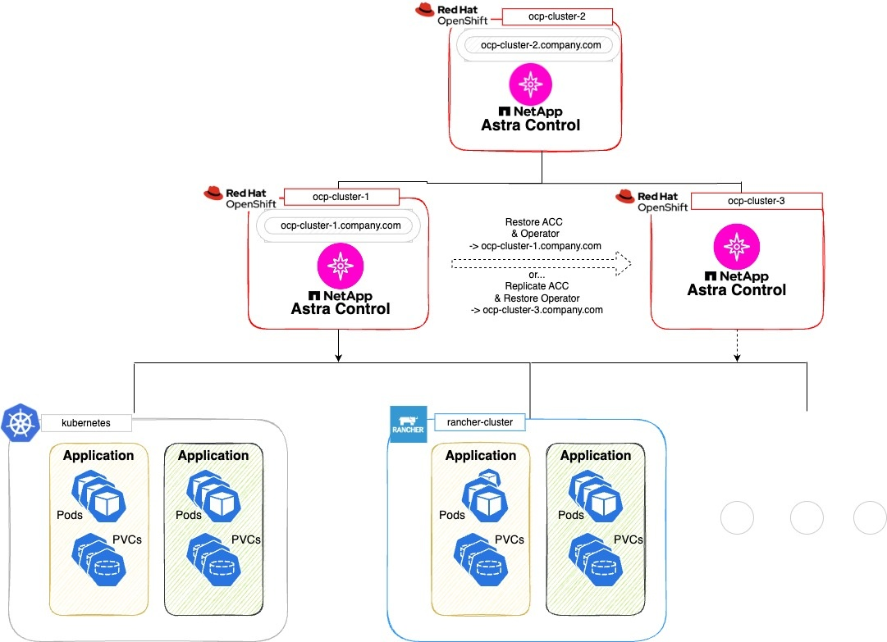

发行说明
发行说明
使用Astra Control Center保护Astra Control Center
 建议更改
建议更改
要更好地确保在运行Astra Control Center的Kuburenet集群上针对致命错误的故障恢复能力、请保护Astra Control Center应用程序本身。您可以使用二级Asta控制中心实例备份和还原Asta控制中心、或者如果底层存储使用ONTAP、则可以使用Asta复制。
在这些情况下、Asta Control Center的第二个实例部署和配置在不同的容错域中、并在与主Asta Control Center实例不同的第二个Kubnetes集群上运行。第二个Asta Control实例用于备份主Asta Control Center实例并可能还原该实例。还原或复制的Astra Control Center实例将继续为应用程序集群应用程序提供应用程序数据管理、并恢复对这些应用程序备份和快照的访问。
在为Astra Control Center设置保护方案之前、请确保您具备以下条件：
-
*运行主Asta Control Center实例*的Kubernetes集群：此集群托管主Asta Control Center实例、用于管理应用程序集群。
-
运行辅助Asta Control Center实例的主Kubernetes分发类型相同的第二个Kubernetes集群：此集群托管管理主Asta Control Center实例的Asta Control Center实例。
-
*与主*具有相同Kubernetes分发类型的第三个Kubernetes集群：此集群将托管已还原或复制的Astra Control Center实例。它必须具有当前部署在主系统上的相同可用Asta Control Center命名空间。例如、如果Asta Control Center部署在命名空间中
netapp-acc源集群上的命名空间netapp-acc必须可用且未被目标Kubnetes集群上的任何应用程序使用。 -
S3兼容存储分段:每个Astra Control Center实例都有一个可访问的S3兼容对象存储分段。
-
已配置的负载平衡器：负载平衡器为Astra提供IP地址、并且必须与应用程序集群和两个S3分段建立网络连接。
-
集群满足Astra Control Center要求：Astra Control Center保护中使用的每个集群都满足要求 "Asta Control Center的一般要求"。

在此示例配置中、显示了以下内容：
-
运行主Asta Control Center实例的Kubernetes集群：
-
OpenShift集群：
ocp-cluster-1 -
Asta Control Center主实例：
ocp-cluster-1.company.com -
此集群用于管理应用程序集群。
-
-
与运行辅助Astra Control Center实例的主集群具有相同Kubernetes分发类型的第二个Kubernetes集群：
-
OpenShift集群：
ocp-cluster-2 -
Asta Control Center二级实例：
ocp-cluster-2.company.com -
此集群将用于备份主Asta Control Center实例或配置复制到其他集群(在此示例中为
ocp-cluster-3集群)。
-
-
将用于还原操作的与主Kubernetes分发类型相同的第三个Kubernetes集群：
-
OpenShift集群：
ocp-cluster-3 -
Asta Control Center第三实例：
ocp-cluster-3.company.com -
此集群将用于Asta Control Center还原或复制故障转移。
-

|
理想情况下、应用程序集群应位于上图中Kubernetes和randcher集群所示的三个Astra Control Center集群之外。 |
图中未显示：
-
所有集群都安装了ONTAP后端以及Asta三叉型或Asta控制配置程序。
-
在此配置中、OpenShift集群使用MetalLB作为负载平衡器。
-
Snapshot控制器和卷SnapshotClass也会安装在所有集群上、如中所述 "前提条件"。
步骤1选项：备份和还原Astra Control Center
本操作步骤介绍了使用备份和还原将Astra控制中心还原到新集群所需的步骤。
在此示例中、Astra Control Center始终安装在下 netapp-acc 命名空间和操作符安装在下 netapp-acc-operator 命名空间。
|
|
Asta Control Center operator也可以部署在与Asta CR相同的命名空间中、但未进行说明。 |
-
您已在集群上安装主Asta Control Center。
-
您已在另一个集群上安装辅助Asta Control Center。
-
从二级Asta Control Center实例(运行于上)管理主Asta Control Center应用程序和目标集群
ocp-cluster-2集群)：-
登录到辅助Asta Control Center实例。
-
"添加主Asta Control Center集群" (
ocp-cluster-1）。 -
"添加目标第三个集群" (
ocp-cluster-3)。
-
-
在辅助Asta Control Center上管理Asta Control Center和Asta Control Center操作员：
-
从应用程序页面中、选择*定义*。
-
在*Define application*窗口中，输入新的应用程序名称 (
netapp-acc）。 -
选择运行主Asta Control Center的集群 (
ocp-cluster-1)。 -
选择
netapp-accAstra Control Center的命名空间。 -
在Cluster Resources页面上，选中*include additional cluster-scope ResResResees*。
-
选择*添加包含规则*。
-
选择这些条目，然后选择*Add*：
-
标签选择器：<label name>
-
组：i扩展.k8s.io
-
版本：V1
-
种类：CustomResourceDefinition
-
-
确认应用程序信息。
-
选择 * 定义 * 。
选择*defin*后，对运算符重复“定义应用程序”过程
netapp-acc-operator)、然后选择netapp-acc-operator命名空间。
-
-
备份Asta控制中心和操作员：
-
备份Astra Control Center和操作员之后、使用模拟灾难恢复(DR)场景 "正在卸载Astra Control Center" 从主集群。
您需要将Astra控制中心还原到新集群(此操作步骤中所述的第三个Kubbernetes集群)、并对新安装的Astra控制中心使用与主集群相同的DNS。 -
使用辅助Asta控制中心、 "还原" Asta Control Center应用程序的主实例从其备份中：
-
选择*Applications*，然后选择Astra Control Center应用程序的名称。
-
从“操作”列的“选项”菜单中，选择*Restore*。
-
选择*还原到新的空间*作为还原类型。
-
输入还原名称 (
netapp-acc）。 -
选择目标第三个集群 (
ocp-cluster-3）。 -
更新目标命名空间、使其与原始命名空间相同。
-
在还原源页面上、选择要用作还原源的应用程序备份。
-
选择*使用原始存储类还原*。
-
选择*恢复所有资源*。
-
查看还原信息，然后选择*Restore*以启动将Astra Control Center还原到目标集群的还原过程 (
ocp-cluster-3）。应用程序进入后、还原完成available状态。
-
-
在目标集群上配置Astra Control Center：
-
打开终端并使用kubeconfig"连接到目标集群 (
ocp-cluster-3)、其中包含已恢复的Astra控制中心。 -
确认
ADDRESSAstra Control Center配置中的列引用了主系统的DNS名称：kubectl get acc -n netapp-acc
响应：
NAME UUID VERSION ADDRESS READY astra 89f4fd47-0cf0-4c7a-a44e-43353dc96ba8 24.02.0-69 ocp-cluster-1.company.com True
-
如果
ADDRESS上述响应中的字段不具有主Asta Control Center实例的FQDN、请更新此配置以引用Asta Control Center DNS：kubectl edit acc -n netapp-acc
-
更改
astraAddress下spec:到FQDN (ocp-cluster-1.company.com在本示例中)。 -
保存配置。
-
确认地址已更新：
kubectl get acc -n netapp-acc
-
-
转至 恢复A作用 控制中心操作员 以完成还原过程。
-
第1步选项：使用复制保护Astra Control Center
本操作步骤介绍了配置所需的步骤 "Asta Control Center复制" 保护主Asta Control Center实例。
在此示例中、Astra Control Center始终安装在下 netapp-acc 命名空间和操作符安装在下 netapp-acc-operator 命名空间。
-
您已在集群上安装主Asta Control Center。
-
您已在另一个集群上安装辅助Asta Control Center。
-
从二级Asta Control Center实例管理主Asta Control Center应用程序和目标集群：
-
登录到辅助Asta Control Center实例。
-
"添加主Asta Control Center集群" (
ocp-cluster-1）。 -
"添加目标第三个集群" (
ocp-cluster-3)。
-
-
在辅助Asta Control Center上管理Asta Control Center和Asta Control Center操作员：
-
选择*群集*，然后选择包含主Astra Control Center的群集 (
ocp-cluster-1）。 -
选择*命名空间*选项卡。
-
选择 …
netapp-acc和netapp-acc-operator"。 -
选择操作菜单，然后选择*Define as applications*。
-
选择*在应用程序中查看*以查看定义的应用程序。
-
-
配置用于复制的后端：
复制要求主Asta Control Center集群和目标集群 ( ocp-cluster-3)使用不同的对等ONTAP存储后端。
在每个后端建立对等并添加到Astra Control后，后端将显示在“后端”页面的“发现”选项卡中。 -
配置复制：
-
在应用程序屏幕上、选择
netapp-acc应用程序。 -
选择*配置复制策略*。
-
选择 …
ocp-cluster-3作为目标集群。 -
选择存储类。
-
输入 …
netapp-acc作为目标命名空间。 -
根据需要更改复制频率。
-
选择 * 下一步 * 。
-
确认配置正确，然后选择*Save*。
复制关系将从过渡
EstablishingtoEstablished。处于活动状态时、此复制将每五分钟进行一次、直到删除复制配置为止。
-
-
如果主系统损坏或无法再访问、请将复制故障转移到另一个集群：
确保目标集群未安装Astra Control Center、以确保成功进行故障转移。 -
选择垂直省略号图标并选择*故障转移*。

-
确认详细信息并选择*故障转移*以开始故障转移过程。
复制关系状态将更改为
Failing over然后Failed over完成后。
-
-
完成故障转移配置：
-
打开终端并使用第三个集群的kubeconfig (
ocp-cluster-3）。此集群现在已安装Asta Control Center。 -
确定第三个集群上的Asta Control Center FQDN (
ocp-cluster-3）。 -
更新配置以引用Astra Control Center DNS：
kubectl edit acc -n netapp-acc
-
更改
astraAddress下spec:使用FQDN (ocp-cluster-3.company.com)。 -
保存配置。
-
确认地址已更新：
kubectl get acc -n netapp-acc
-
-
kubectl get crds | grep traefik
所需的traefik CRD：
ingressroutes.traefik.containo.us ingressroutes.traefik.io ingressroutetcps.traefik.containo.us ingressroutetcps.traefik.io ingressrouteudps.traefik.containo.us ingressrouteudps.traefik.io middlewares.traefik.containo.us middlewares.traefik.io middlewaretcps.traefik.containo.us middlewaretcps.traefik.io serverstransports.traefik.containo.us serverstransports.traefik.io tlsoptions.traefik.containo.us tlsoptions.traefik.io tIsstores.traefik.containo.us tIsstores.traefik.io traefikservices.traefik.containo.us traefikservices.traefik.io
-
如果上述部分CRD缺失：
-
转至 "Traefik文档"。
-
将"定义"区域复制到文件中。
-
应用更改：
kubectl apply -f <file name>
-
重新启动traefik：
kubectl get pods -n netapp-acc | grep -e "traefik" | awk '{print $1}' | xargs kubectl delete pod -n netapp-acc
-
-
转至 恢复A作用 控制中心操作员 以完成还原过程。
-
第2步：恢复Asta Control Center操作员
使用辅助Asta控制中心、从备份中还原主Asta控制中心操作员。目标命名空间必须与源命名空间相同。如果从主源集群中删除了Astra Control Center、则仍会存在备份以执行相同的还原步骤。
-
选择*应用程序*，然后选择运营商应用程序的名称 (
netapp-acc-operator）。 -
从“操作”列的“选项”菜单中，选择*Restore*
-
选择*还原到新的空间*作为还原类型。
-
选择目标第三个集群 (
ocp-cluster-3）。 -
将命名空间更改为与主源集群关联的命名空间相同 (
netapp-acc-operator）。 -
选择先前创建的备份作为还原源。
-
选择*使用原始存储类还原*。
-
选择*恢复所有资源*。
-
查看详细信息，然后单击*Restore*开始还原过程。
"应用程序"页面显示了正在还原到目标第三个集群的A作用 力控制中心操作员 (
ocp-cluster-3）。此过程完成后、此状态将显示为Available。十分钟内、页面上的DNS地址应已解析。
现在、目标第三个集群上可以使用Astra Control Center、其注册的集群以及具有其快照和备份的受管应用程序 (ocp-cluster-3）。您在原始实例上设置的任何保护策略也会位于新实例上。您可以继续创建计划内或按需备份和快照。
故障排除
确定系统运行状况以及保护过程是否成功。
-
Pod未运行：确认所有Pod均已启动且正在运行：
kubectl get pods -n netapp-acc
如果中有一些Pod
CrashLookBackOff陈述并重新启动它们、它们应过渡到Running状态。 -
确认系统状态：确认Astra Control Center系统处于
ready状态：kubectl get acc -n netapp-acc
响应：
NAME UUID VERSION ADDRESS READY astra 89f4fd47-0cf0-4c7a-a44e-43353dc96ba8 24.02.0-69 ocp-cluster-1.company.com True
-
确认部署状态：显示Astra Control Center部署信息以确认
Deployment State为Deployed。kubectl describe acc astra -n netapp-acc
-
Restored Asta Control Center UI返回404错误:如果在选择时发生这种情况
AccTraefik作为入口选项、选中 Traefik CRD 以确保所有这些组件均已安装。